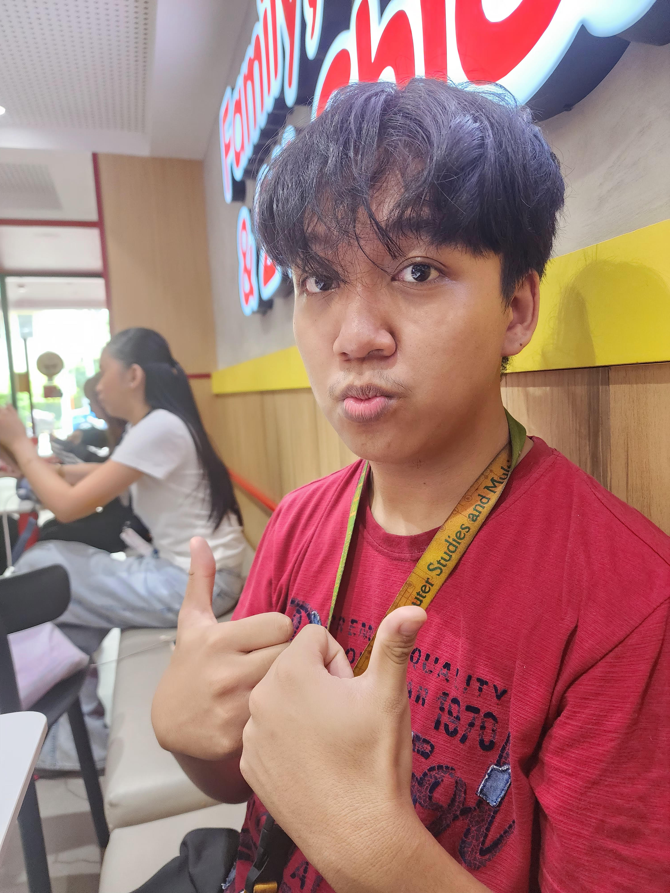

Jericho Macarang
To be honest i never really expected to have a such close bond with this guy
nickname : Enzo
favorite : 24 chicken
i would say the core memory i had with him was when we went to a staycation and the next day when i woke up i just randomly saw him dancing in the corner while playing music on the tv
Home